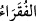
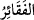
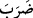
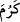
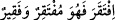
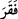
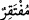
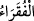

25. Eğer seni yalanlıyorlarsa (üzülme), onlardan öncekiler de yalanlamışlardı.
(Oysa ki) peygamberleri onlara açık âyetler (mucizeler), sahifeler ve aydınlatıcı
kitap getirmişlerdi.
26. Sonra ben, o inkâr edenleri yakaladım. (Bak ki) cezam nasıl oldu!
15) “Ey insanlar! Allah’a muhtaç olan sizsiniz.” Muhtaçlar anlamına gelen “
”,
fakîr’in; “
” ise fakîre’nin çoğuludur. Fakîr, omurga kemiği kırık olan kimse
demektir. Fakr, insanın belini büken şeydir. Tâcü’l-masâdır’da “fakir” kelimesinin “
” yâni ikinci babtan; Kâmûs’ta ise “
” yâni beşinci babtan olduğu ifâde edilmiştir.
Râğıb Müfredât’ta der ki, fakirleşme ve yoksullaşmayı ifâde etmek için “
” denilir. Kıyas gereği olsa bile “ ” denilmez. Bütün bunlardan fakîr kelimesinin, “
” kelimesi gibi, çok şiddetli ihtiyaç sâhibi anlamına gelen bir mübalağa sığası olduğu
anlaşılır.
Fakr, zorunlu ihtiyaç sahibi olmak ve muhtaç olduğu şeyi bulamamaktır. Burada
kelimenin “
” şeklinde lâm-ı tarif (elif-lam) ile mârife yapılması ise
fakirliklerindeki mübalağayı ifâde etmek içindir. Zira insanlar çok fakir ve çok muhtaç
oldukları için sanki yalnız onlar fakir ve muhtaç kabûl edilmişlerdir. İnsanlara nispetle
diğer yaratıkların fakir ve muhtaç olmaları neredeyse yok hükmündedir.
Mânâ şöyledir: Ey insanlar siz gerek kendinizde gerekse size ârız olan mühim işlerde
yahut zorunlu ve önemli durumlarda Allah’a çok ve şiddetli bir şekilde muhtaçsınız.
Zira her hâdise, ilk defa meydana gelişinde olduğu gibi ondan sonra da süreklilik ve
devamlılığında da yaratıcıya muhtaçtır. Sonra insan sevimsiz halleri uzaklaştırıp
bertaraf etmekle beraber dünyada rızık ve diğer bazı menfaatlere; âhirette de mağfiret
ve benzeri durumlara muhtaçtır. İşte insan zat, sıfat ve fiillerinde Allah Teâlâ’nın lütuf
ve ihsanına dâimâ muhtaç bir varlıktır.
Bazı büyükler der ki, Allah Teâlâ insandan başka yaratıklardan hiçbir şeyi -mukarreb
melekleri bile- “Ey insanlar! Allah’a muhtaç olan sizsiniz” hitâbıyla şereflendirdiği
gibi şereflendirmemiştir. Bunun îzâhı şudur: Mahlûkatın Allah’ın fiillerine muhtaç
olmaları yaratma ve benzeri bakımdandır. İnsanın Allah’a muhtaç oluşu ise Allah’ın zâtı
ve sıfatları cihetindendir. Bütün yaratıklar her ne kadar Allah’a muhtaç ise de ancak
hakîkî mânâda Allah’ın zâtına ve sıfatlarına muhtaç olmak, yaratıklar arasında sadece
insana has bir durumdur. Bu, halkı raiyye ve avânesi bulunan çok güzel bir padişahın
durumuna benzer. Halk ve insanlar genel olarak bu padişahın hazînesine ve ülkesine
muhtaçtır. Ancak padişahın âşıkları onun zâtına ve sıfatlarına muhtaçtırlar. Buna göre
her fakirin zengin ve müstağni oluşu, muhtaç olduğu şeye göredir. Halkın zengin ve
müstağnî oluşu mal ve mülk iledir. Âşığın istiğnâsı ise mâşûku iledir.
Âşığın murâdı, dostun yüzünü görmektir.